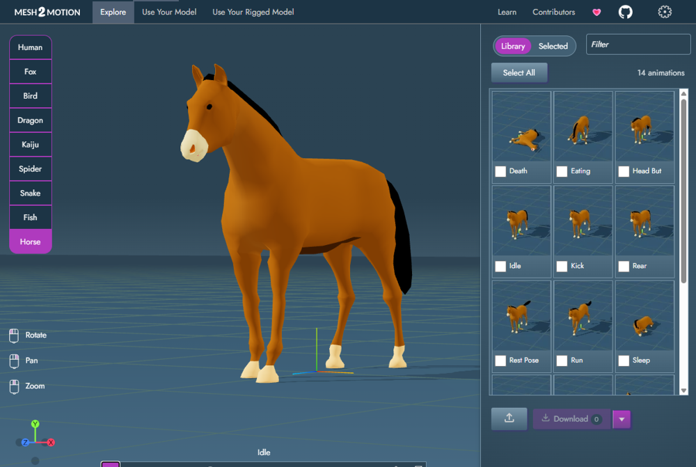
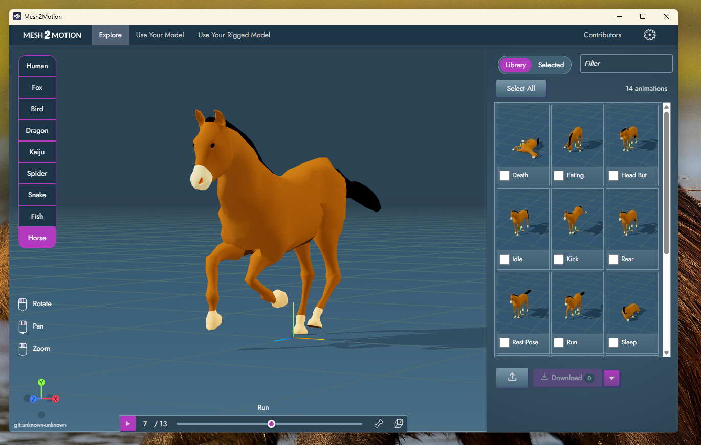
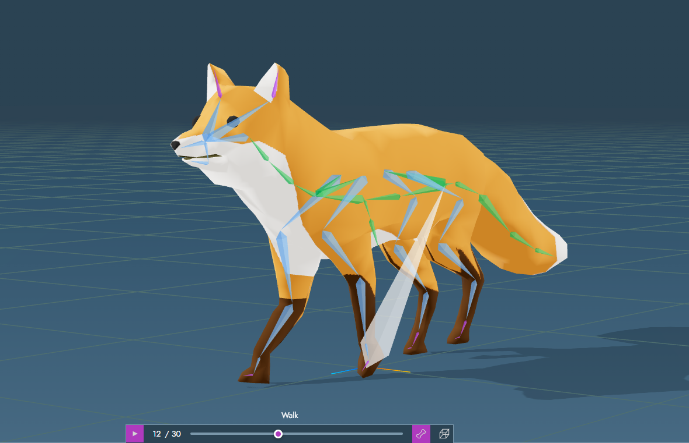
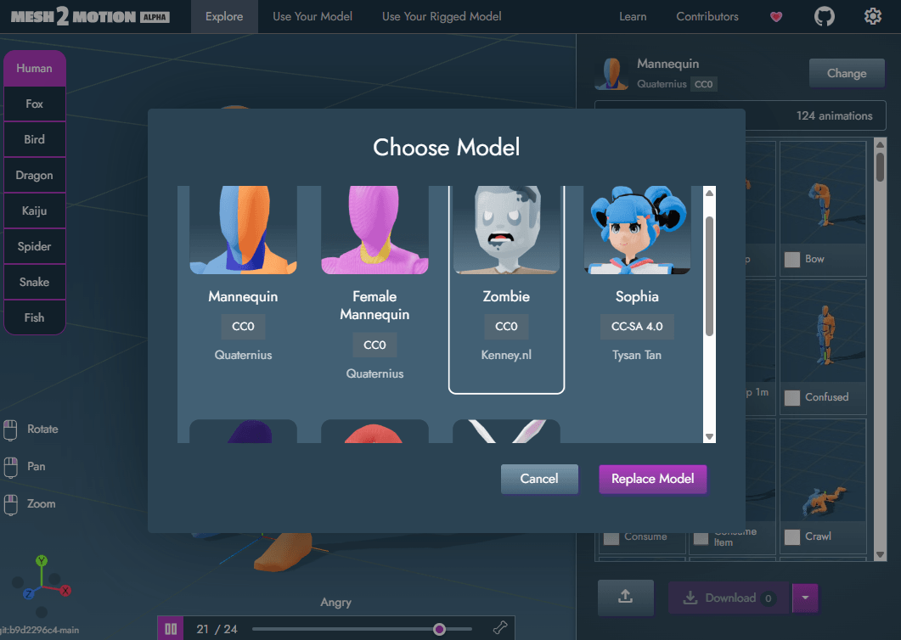
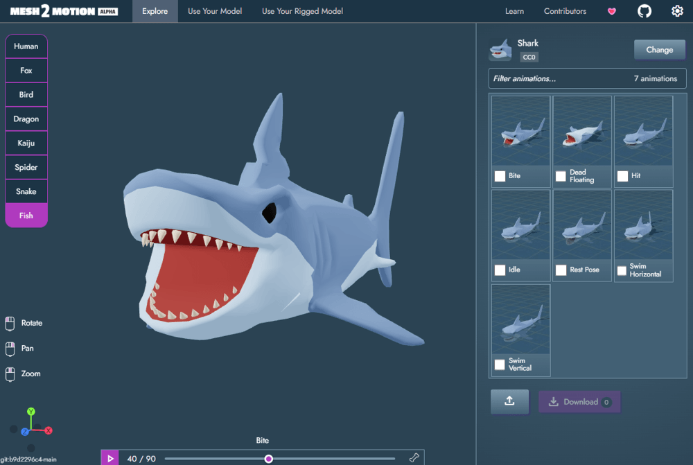
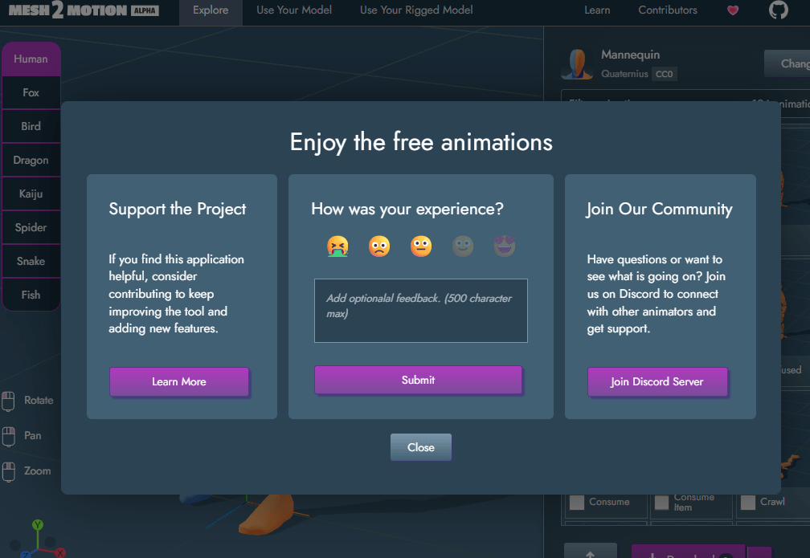
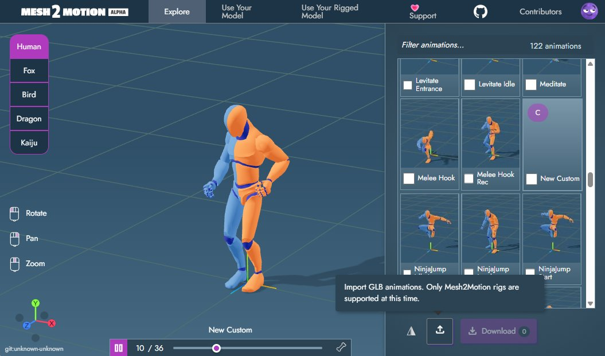
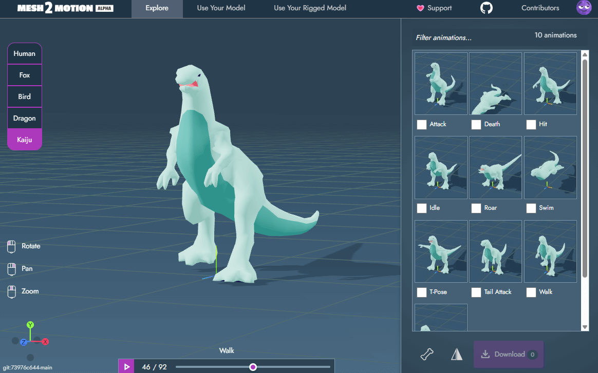
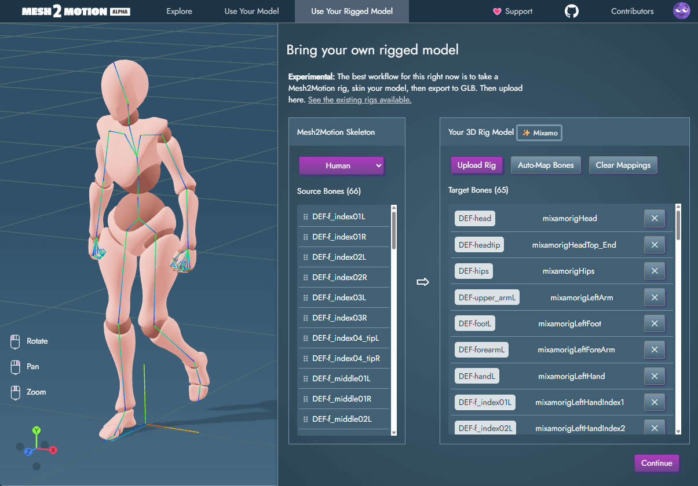

News
Update 12: Horses and Offline Application
8/2/2026 | Scott Petrovic
Horse Rig and base animations

This isn't just a bigger fox rig! The new horse rig is an entirely new creation with a set of 13 animations. Where the fox would have a more stealthy set of movements, the horse is more majestic by carrying itself up with its long neck and unique walking gaits. These animations will hopefully expand and improve as time goes on.
Work Offline

The Mesh2Motion app can now be used offline. This allows users to continue working on their projects without an internet connection. All the features in the online version work the same as in the offline version. This should have working versions on all the desktop operating systems like Windows, Mac, and Linux. This is the first release of this, so there might be bugs I didn't catch while testing.
Check out the downloads on Github: Offline Desktop App
Added 40 human animations
Because people can never have enough human animations. I have been getting random requests for the past couple of months and finally added some common ones. This brings the total count to over 160 animations for the human rig. Some of the animations are the following:
- Strafing
- Gliding
- Ladder movement
- More death animations
- Bow and Arrow
- Dodging
- More zombie related animations
Improved bone visualization

The green "stick" skeletons were okay, but there were certain things that were difficult to communicate. These were the current issues:
- The orientation, or "bone roll", was impossible to see before. This is the rotation around the bone's local axis.
- With some of the rigs, the bones start overlapping each other and it is hard to tell them apart. This can make the bone placement more difficult.
With the new skeleton, it is easier to debug and see how the bones are rotating. There is a system to the colorization as well. Different bone types are categorized and colored differently. For example, spine-related bones are always green. This allows the "skinning" algorithm to do a better job by behaving differently depending on the bone type. This bone classification is pretty new. This is something I plan on developing more in the future.
Other release notes
- Remove icon toggles and make them more explicit with pill type buttons with text
- Improve touch devices by using pointer events instead of mouse events
- Show a separate "selected" animations area before exporting to make it easier to review larger lists
- Move Google Fonts locally in app to help with offline usage
- New updated favicon for tab
- Animation video previews use MP4 format now for better cross-platform support with offline use
- Improve error messaging when importing animations fails because of bone naming
- Make transform controls more compact when moving or rotating
- Message notification when the application goes offline
- Add "extremity" bone classification to help with skinning tips like fingers and toes
- Implement missing hand algorithm for better skinning.
- Add ability to export all animations with "select all" toggle
- Ignore using tip/leaf bones when skinning. Their orientations were messing up the finger tips.
- Make animation names consistent by adding underscores instead of spaces.
- Add download option to only export out animation data without mesh
- Add a nose bone to a couple of rigs to fix skinning process with broken mouths (fox and kaiju)
- Fixed a couple of model variations so they load correctly with base models
- Add a wireframe toggle button by skeleton toggle to help test out skinning results
- Better error handling with retargeting if bones are missing parents.
- Show warning with retargeting if there is a flat bone hierarchy with some imported Mixamo rigs
Update 11: Model variations
Model variations on explore page
Give options to swap out the default model for a rig. There are a number of models that have been added across all the rig types. Another reason this was added was to see which models can work well with the rig, and which ones look odd because the motion doesn't fit the creature well. For models that have a different license than CC0, I made sure to specify the license type with a description of it when hovering over it.

Add Fish type rig
Adding a shark rig with a few animations. Also added a whale variation to show how that can be used with the rig.

Added post-download page
Gives a better landing page to help promote things for the project as well as provide a space to give feedback.

Other release notes
- Allow scrubbing timeline to be smooth instead of snapping to keyframes.
- Add application settings to turn off floor grid and turn off background gradient.
- Add download option to export out human bone names using Mixamo bone naming to use/import in external applications.
- Add Rigify bone naming matching when importing rigged meshes (new contributor Mark Arneman).
- Fix position of animation naming on filter with all pages.
- Add rig template images to help place bones correctly.
- Fix small hiccup with fox running animation so it loops better.
Update 10: Spiders and Snakes
Spider and Snake rig
The spider comes with 9 animations including the basics like idle, walk, attack, and death. The snake comes with 7 animations covering similar ground. Part of adding these was to expand the variety of rigs to see how well this tool can support different types of creatures.
Skeleton Editing Improvements
Easier to drag bone joints to the right position. The position will snap to the middle of the mesh. The other transform options also exist as a toggle if you want to still use that.
- Make bone joints display slightly larger and semi-transparent to help see overlapping joints.
- When moving bones with mirror mode, hide one side of bone joints to make positioning easier to see bones.
- Add option to move bones independently so they don't affect the child bone positions.
- Add an option for moving bones to volume center for easier placement
Other release notes
- Model upload: Add a 3d transform widget to fix model position after adding. (by new contributor DarthMarino)
- Add a new gear icon to show settings. Theme toggle was moved here. Also added new way to control light intensity. More options might come later like turning on/off grid or showing data.
- Human animations: Tweaked Quaternius neck bone position to be in line with custom animations for consistency.
- Animation list: Improve 'lazy loading' of previews to minimize image 'popping' that was happening
- Make all registration animation poses called "Rest Pose" across rigs instead of calling them all a T-Pose for standardization.
- Upload your model: Change A-Pose correction for human to arm extension since that is done automatically now.
- Added a new learn section to the site to add YouTube videos or other training material
- Upload your own rig: Added skeleton hierarchy display for better debugging
- Upload your own rig: Show how many skinned meshes exist in the target rig for better debugging
- Upload your own rig: Do a better job clearing all bone mappings when using the clear all button
- Upload your own rig: Add text filtering to source and target bones to help find them quicker.
- Skinning algorithm: Try to add a more targeted skinning algorithm based on bone types: torso, limbs, wings, tail for better deformation.
- Rename "quadruped" verbiage to "fox" since we might have other quadruped types in the future
- Tech upgrade: Have all the rigs use a configuration file to dynamically populate the UI areas. This will make it much easier to add new rigs in the future
- Tech upgrade: Upgraded to latest libraries: three.js, typescript, vite, eslint
- Tech upgrade: Add ability in code to add extra 3d models. Added an A-Pose human animation for testing for now.
Update 9: Import Custom Animations
Import custom animations

One issue that I had was trying to tell animators how to test their Blender animations in the Mesh2Motion app. There was no easy way without pulling down the source code and manually loading in their animation file. Now the workflow is much easier. Much faster and easier verification before they might submit their animations to be included.
This could also have a secondary benefit to allow people to make animation packs they could provide for free, or sell on sites like Gumroad. People could spend a bit of money and download a GLB file with animations. Those custom animations could then be imported into Mesh2Motion and used with the auto-rigging and default animations.
Other release notes
- Added a number of Quaternius animations from his latest pack for the human rig.
- Handle meshes with multiple materials on import. Previously there were errors when a mesh had multiple materials causing silent errors.
- Retargeting: Fix animation data slowly getting messed up during retargeting process and export.
- Retargeting: Make sure at least one bone mapping is done before allowing retargeting.
- Retargeting: Shorten name for retargeting naming to "RT" to simplify names.
- Move the toggle bone display to the player since import button expanded the tools area too much.
- Updated human rig bones and animations to reflect new simplified bone naming.
- Add contributor page to Github repository for better visibility.
- Improve tooltip visuals and instructions for download button
- Minor styling for back buttons in process to help visual flow.
- Upgrade three.js code library to 182
- Clean up dragon bones in skeleton file to only include "deform" bones
Update 8: Kaiju & Import Rigged Meshes
1/22/2026 | Scott Petrovic
New Kaiju Rig

I thought this would be fun to do. I have a deep love for kaiju movies and wanted to create a rig with this. Comes with 10 animations:
- Attack
- Death
- Hit
- Idle
- Roar
- Swim
- T-Pose
- Tail Attack
- Walk
- Walk Root motion
Upload Your Rigged Mesh (Experimental)

Upload an already rigged mesh to use the Mesh2Motion animations. This is a large feature that is still a work in progress. I have been working on it for the past two months. I want to push out the current state to see if people even use this before developing it more. There are two main use cases I could find for this:
- You have a custom model that the Mesh2Motion web rigger cannot handle well. You want the animations, but you are a 3d person who wants control over the weight painting in your 3d tool. For this, people can use the Blender rig linked and do all the custom weight painting.
- People have rigged meshes that use other bone structures or naming. This could be from other tools that do rig generation and have the vertices assigned to the bones already.
The second use case with alternate bone names is where the feature gets complex. There are two main areas to think about when working with alternative bone structures. There is bone mapping, and there is bone roll. Bone mapping can be done manually, by assigning one named bone to another. Common mappings can use a template to go from one bone format to another.
The "bone roll" correction is often needed in addition to the bone map process. Even if two bones look the same, one could be rotated differently along the axis that pierces through the ends. If this orientation is different, all the rotation data is going to be wrong. A new contributor (Sketchpunklabs) provided an algorithm/example to accomplish this. This was extremely helpful.
Other release notes
- 13 New Human animations: Backflip, Dizzy, fighting idle, fighting left and right jab, flying forward, flying two-hand forward, jumping jacks, levitate entrance, levitate idle, pushup, sleeping, throw object
- Fixed iOS bug that wouldn't allow uploading 3d file formats
- Add support for meshes that store attributes in interleaved format
- Fix potential memory leak when weight paint re-generation happens
- Make page titles consistent
- Tried making page names a bit more descriptive with their use case